Colossos
Os Colossos são titãs monumentais que funcionam como recipientes físicos para os dezesseis fragmentos da alma de Dormin, uma entidade proibida que foi selada há eras para evitar o caos. Eles são seres híbridos, compostos por uma fusão de matéria orgânica, como pele e pelos, e elementos inorgânicos, como rochas milenares, terra e intrincadas estruturas arquitetônicas que lembram ruínas de templos. Espalhados por paisagens desoladas das Terras Proibidas, esses gigantes não são meros monstros, mas guardiões silenciosos e passivos que mantêm o equilíbrio do selo espiritual; sua existência é uma tragédia solitária, pois eles precisam ser sacrificados para que o poder contido em seus corpos seja libertado, servindo como o sacrifício final na jornada de Wander.
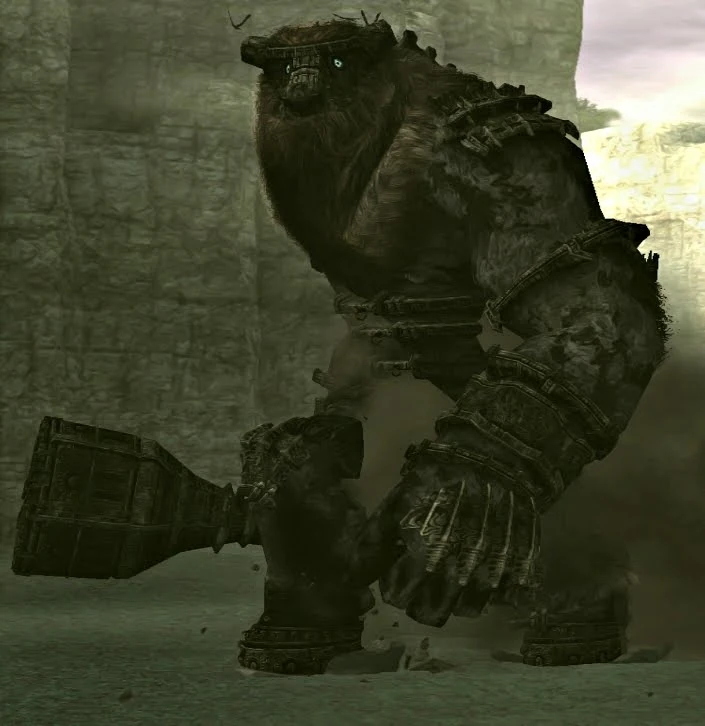
Valus
Valus é o primeiro colosso de Shadow of the Colossus. É o menor entre os colossos bípedes e também o quarto menor colosso do jogo. Sua aparência é fortemente influenciada pelo minotauro da mitologia grega, com corpo humanóide e características de touro, como a cabeça, os chifres e as patas.
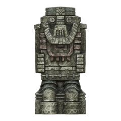
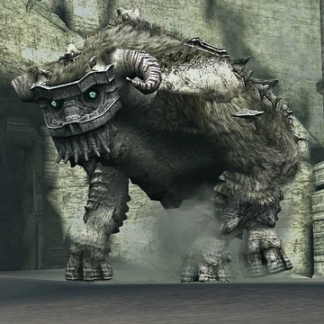
Quadratus
Quadratus é o primeiro colosso quadrúpede do jogo e é o segundo colosso mais alto, perdendo apenas para Malus. Embora apelidade de "mamute" pela equipe, sua aparência é muito similar à de um touro. Mas seus sons, por outro lado, sãos similares aos de um elefante.
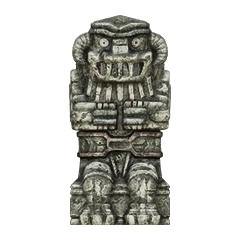
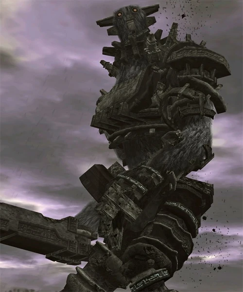
Gaius
Gaius é um colosso bípede que não possui características animalescas, suas proporções são mais humanas e ele era apelidado de "cavaleiro" pela equipe. A espada conectada ao braço é uma de suas características mais marcantes.
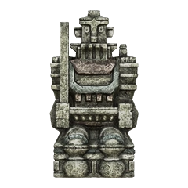
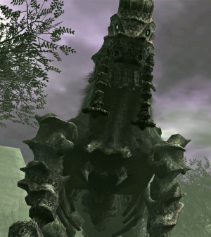
Phaedra
Phaedra é o segundo colosso quadrúpede e possui um corpo semelhante ao dos equídeos (como o cavalo e a zebra) e dos artiodátilos (como a girafa e o veado). "Kirin", seu apelido de produção, é uma criatura mitológica da Ásia que mistura várias espécies, como cavalo e cervo.
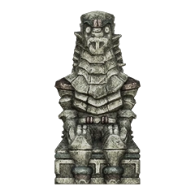
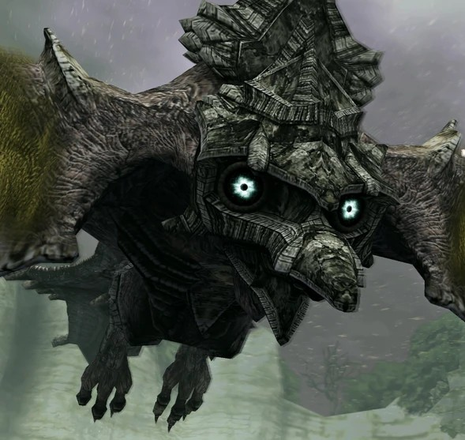
Avion
Avion tem todas as características de uma ave de rapina. Uma grande envergadura, uma cauda longa e garras. Ele parece ser composto inteiramente de rocha, mesmo as partes cobertas de pelo parecem estar sobre uma outra cobertura de pedra.
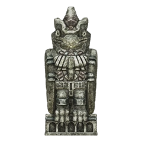
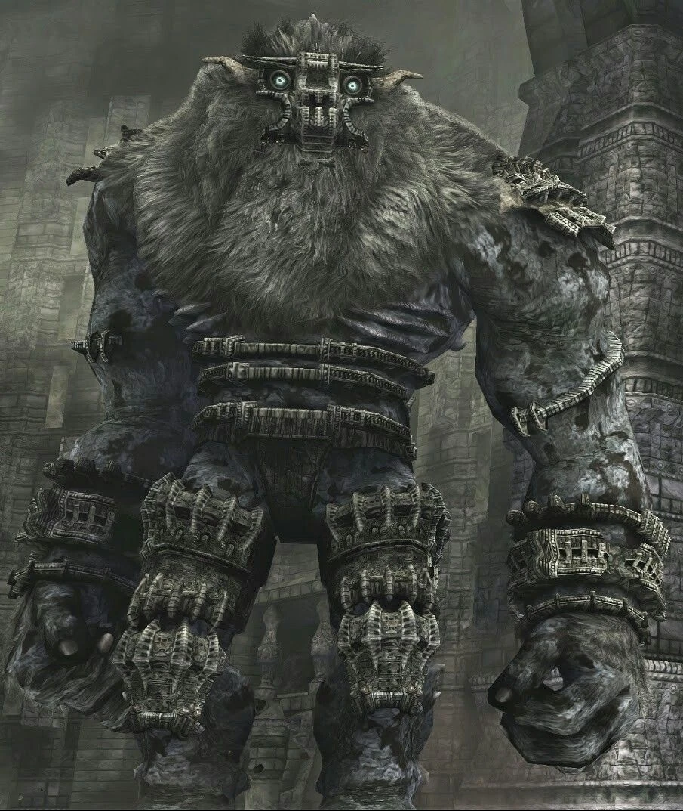
Barba
Barba é o segundo colosso minotauro e o maior entre eles. Fisicamente ele é parecido, mas possui uma estrutura mais forte e com braços maiores. Também possui pouca armadura e a parte superior com muito pelo. A barba logicamente é sua característica mais marcante.
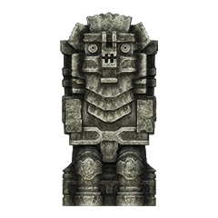
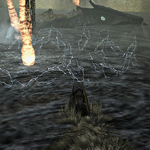
Hydrus
Hydrus é o primeiro colosso aquático, sendo baseado em uma enguia elétrica. Toda a extensão do seu corpo possui pelo na parte superior, enquanto a barriga e a cabeça são de pedra. Ele possui bigodes longos, barbatanas e três chifres alaranjados em certas partes das costas.
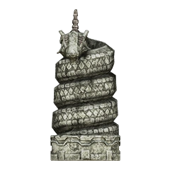
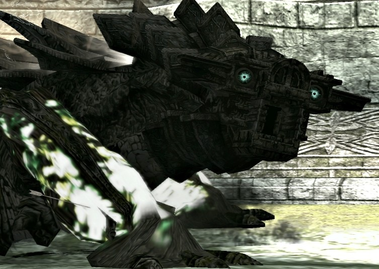
Kuromori
Kuromori é o terceiro menor colosso do jogo. Ele tem corpo de lagarto, é comprido com uma cabeça pequena e uma cauda bem larga e achatada. Algumas partes de seu corpo brilham, como as escamas das costas, que são eletrificadas como defesa, e as patas.
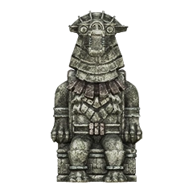
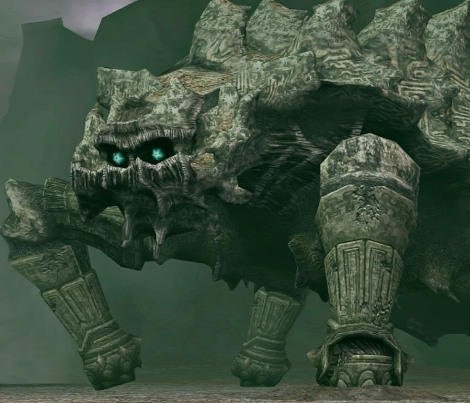
Basaran
Basaran é o colosso quadrúpede mais baixo, mas também o mais comprido. Ele é baseado em uma tartaruga, como fica claro pelo massivo casco nas suas costas. Esse casco possui duas fileiras de espinhos enormes e é marcado com diversas inscrições nas laterais.
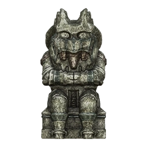
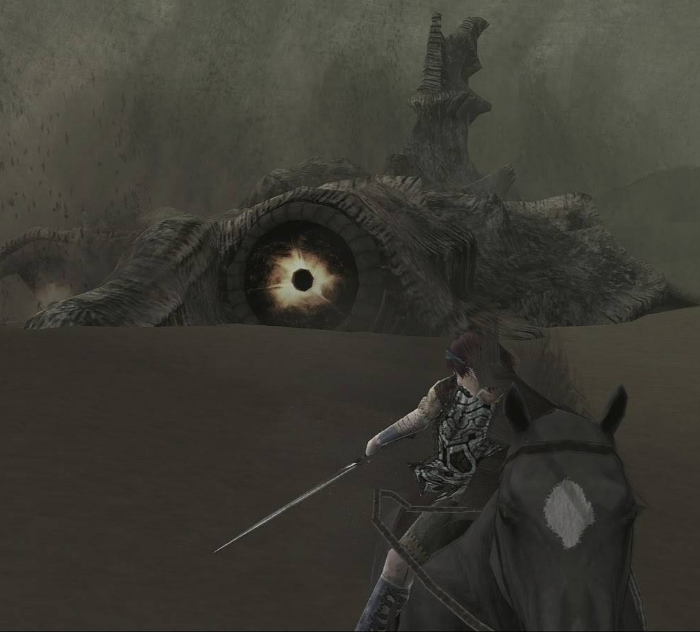
Dirge
Dirge é uma serpente terrestre que se move pela areia e a menor entre as 3 serpentes do jogo. O seu corpo é de pedra mas é coberto de pelo por toda a extensão das costas.
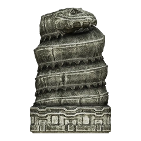
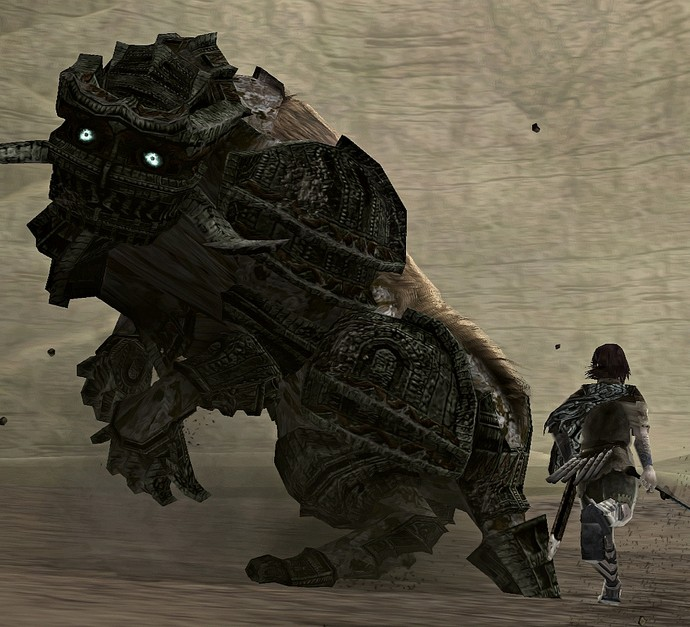
Celosia
Relativamente, Celosia é muito pequeno, sendo aproximadamente do tamanho de um elefante. Esse tamanho traz diferenças no visual, sua armadura cobre praticamente todas as partes do corpo, inclusive as costas, a única parte com pelo e onde fica o seu ponto fraco.
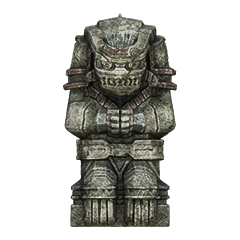
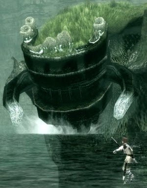
Pelagia
Um dos colossos com a aparência mais peculiar. Sua postura é semelhante à de um gorila, com longas patas dianteiras e curtas patas traseiras dobradas, ele possui um casco, presas e até dentes, mas no topo da cabeça.
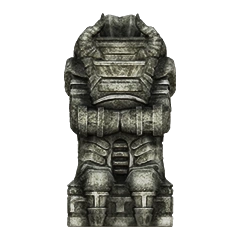
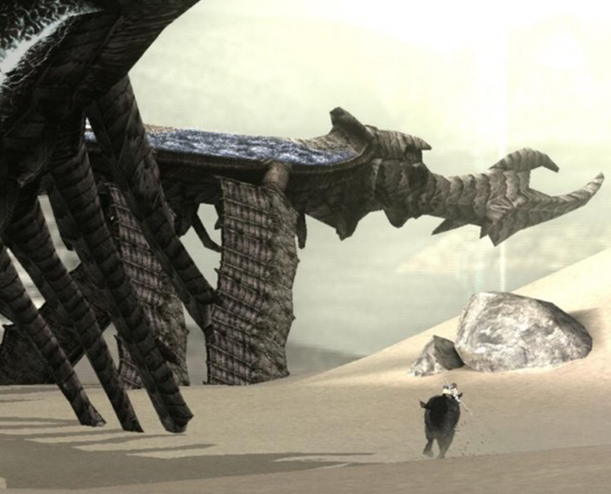
Phalanx
Phalanx é o último colosso serpente, mais semelhante a um dragão chinês. Alguns também o descrevem como libélula, da qual podemos notar algumas semelhanças, como o corpo comprido e os dois pares de asas.
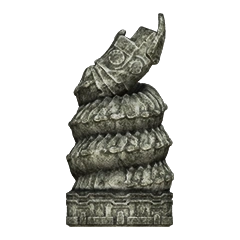
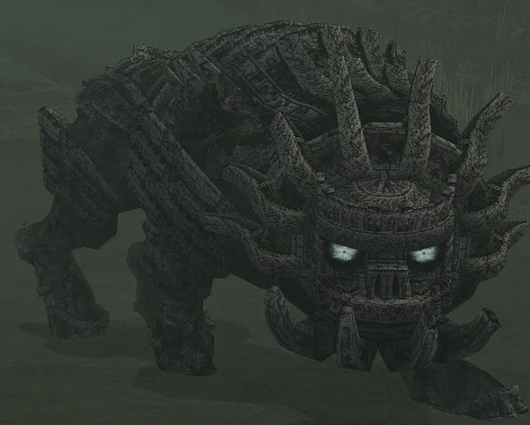
Cenobia
Fisicamente semelhante a Celosia, Cenobia é ainda mais baixo e o menor de todos os colossos. Ele se assemelha a um leão, desde sua estrutura física, sua máscara ao redor da cabeça que forma uma espécie de juba, até seus rugidos.
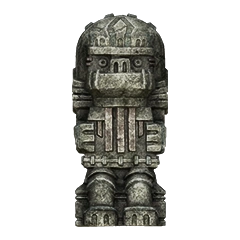
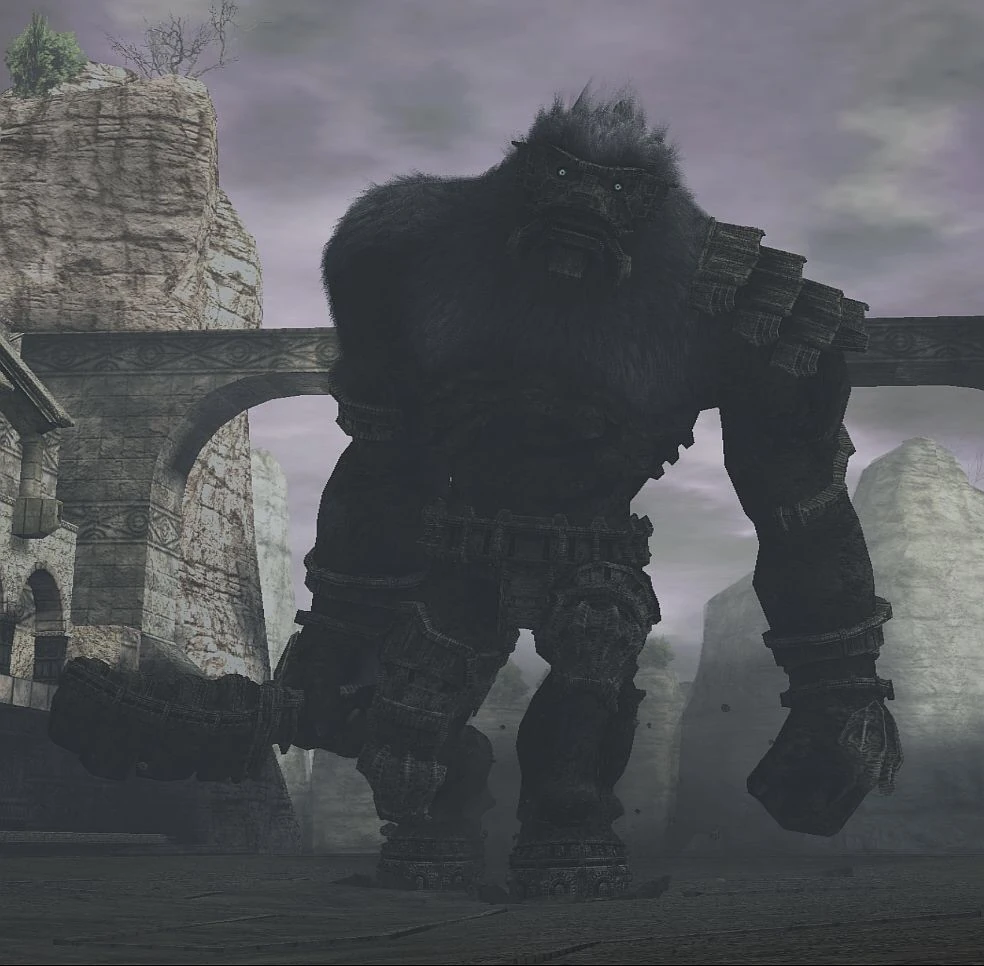
Argus
O último colosso minotauro, fisicamente Argus não é muito diferente dos outros dois. Sua armadura até cobre locais semelhantes, como ombro, pernas e parte do braço. Ainda assim Argus possui uma aparência mais intimidadora e agressiva, talvez pela máscara e pelo porte.
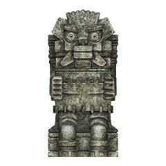
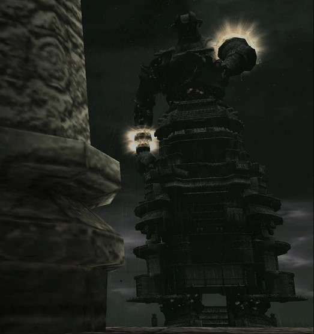
Malus
Malus é o colosso mais humanóide do jogo, com rosto, mãos e pés humanos, além de sons mais semelhantes a gemidos. Sua aparência é de um mago, visível pela grande túnica e adornos como braceletes e anéis.
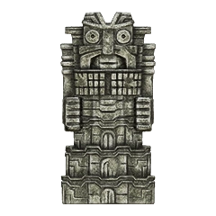